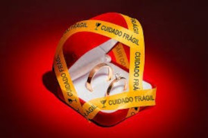

Segundo dados do IBGE, publicados pelo site da Uol, o número de divórcios no Brasil tem aumentado. O site diz que: “ao longo dos anos o brasileiro passou a se divorciar mais em relação ao número de casamentos, tínhamos 10 divórcios para cada 30 casamentos, e agora essa média é 10 a cada 24. ” A pandemia impactou na alta de divórcios, mas mesmo antes da ocorrência da mesma, os índices já eram crescentes.
Com o passar dos anos, o casamento duradouro tem se tornado uma utopia para os mais jovens, e um grande desafio para os mais experientes. Novas ideologias e concepções sobre formas de se relacionar tem sido disseminadas e aderidas. Algumas delas por sua vez propagam a ideia de amor líquido, que é um termo utilizado pelo escritor Zygmunt Bauman. Ele explica em seus livros que esse tipo de amor poderia ser definido como um “amor descartável”, que pode ser substituído a qualquer momento. O termo “líquido” é devido à falta de firmeza, de solidez, ou seja, os relacionamentos se desfazem muito facilmente. Bauman diz que as pessoas passam a tratar as outras como objetos para o seu próprio usufruto. Esse amor é descrito por ele como egoísta e egocêntrico, já que quando o outro apresenta algum defeito ou dificuldade, o parceiro prontamente já o descarta, pois não está tendo mais suas necessidades satisfeitas como antes.
Nessas relações a preocupação é apenas receber, não existe troca, ou mesmo entrega. Uma analogia para exemplificar seria: uma pessoa que tem um iphone 10, ao ver que foi lançado o iphone 11, prontamente descarta o 10 porque ele já se tornou obsoleto e compra o celular mais atual, mais inovador. Ou mesmo se o aparelho apresenta algum defeito, ao invés de leva-lo para o conserto quando esse é viável, a pessoa rapidamente se livra do antigo e compra um novinho em folha. Muitos relacionamentos da contemporaneidade também adquirem essa característica, as pessoas já não querem investir no crescimento e no desenvolvimento de uma relação, já não tem mais a paciência de vencer as adversidades juntos, perderam a capacidade de encarar os problemas relacionais.
Bauman explica que esse tipo de relacionamento foi impulsionado pelo advento do capitalismo e o incentivo ao consumismo, que gera o descontentamento constante nas pessoas, levando-as a acreditar que o que elas possuem nunca é suficiente, e que elas sempre precisam de algo melhor. Uma de suas frases mais célebres é: “na sociedade contemporânea, nada é feito para durar.”
Algumas décadas atrás os relacionamentos eram mais duradouros, o “até que a morte nos separe” era levado mais a sério entre os mais antigos. O compromisso firmado no altar era valioso e sagrado. Porém, apesar de as relações serem mais longas, não é possível dizer que fossem mais saudáveis e felizes. É comum ouvir a história de mulheres e homens que passaram anos de suas vidas num casamento falido, mas em nome da aliança, decidiram permanecer juntos, mesmo em meio à violência doméstica, abusos psicológicos e emocionais, falta de respeito, infidelidade e etc. Assim como na atualidade muitos se desfazem de uma relação amorosa por uma simples discordância de opiniões, os mais antigos mantinham relações destrutivas até o fim de suas vidas. O que leva à conclusão de que os extremos são perigosos, e que é necessário o equilíbrio. O foco é que os relacionamentos sejam duradouros, mas que também sejam saudáveis e felizes.
Mas o que seria um relacionamento saudável e feliz? Sabe-se que a definição de felicidade é relativa, mas há algo que é universal em todos os seres humanos: a necessidade de se sentir amado. O que as pessoas buscam nas relações é o amor, o acolhimento e o sentimento de pertencimento. E o que seria amor? Há muitos significados filosóficos, psicológicos e religiosos para essa palavra, mas é importante se ater ao que se tornou objetivo a respeito dela.
Muitas pessoas costumam confundir amor e carência, e é importante diferenciar esses dois termos, pois eles são opostos. Há vários indivíduos que entram em relações amorosas por carência, só para não se sentirem sozinhos, se unem à parceiros românticos apenas para satisfazerem suas necessidades emocionais, físicas e psicológicas. Eles têm altas expectativas sobre o outro, demandam o tempo inteiro, e nunca estão satisfeitos com aquilo que lhes é entregue. Além disso, são pessoas incapazes de ofertar algo, estão sempre na posição de pedintes, como “mendigos de amor”. Se sujeitam a migalhas de atenção oferecida, e são escravizados por esse sentimento de vazio interno que os leva a acreditar que precisa do outro para se sentir bem e feliz. Esses indivíduos sugam tudo que os outros lhes oferece, porque eles mesmos estão sempre com seus tanques de amor escassos. O par dessas pessoas pode sair da relação por não suportar a alta exigência constante, e por não ser uma relação recíproca, ou pode se aproveitar da fragilidade do outro (o carente sente medo de ficar sozinho), e manipulá-lo, ameaçar deixa-lo, mantendo assim o controle sobre o mesmo.
A psicanálise explica o fenômeno da carência como uma dependência emocional que teve origem na infância, com alguma disfunção nas experiências vivenciadas pela criança, que a levou a conceber a ideia de que elas não receberam amor suficiente. Na dependência emocional, o carente não se importa com o outro, o que importa é que o outro não o deixe. E aqui vemos o oposto do amor, que é o egoísmo, o pensar somente em si.
Sendo assim, o amor não diz respeito às necessidades próprias, mas as do outro. Porém, para amar o outro, é necessário amar primeiramente a si mesmo, porque assim o fazendo, já se entra na relação com menos exigência e demanda, e com um coração pronto para doar. Amor é doação, entrega ao outro. Quando alguém ama o outro, não pensa somente no que pode ganhar na relação, mas também o que pode oferecer.
No livro as 5 linguagens do amor, escrito por Gary Chapman, ele afirma que todas as pessoas têm tanques de amor, e que os relacionamentos são felizes quando os tanques de ambos estão cheios. Ele explica que para que uma relação seja bem-sucedida é necessário aprender a se comunicar e expressar-se na linguagem do amor do outro, e ele categoriza em 5: qualidade de tempo, atos de serviço, palavras de afirmação, presentes e toque físico. Porém, mais importante do que aprender a linguagem de amor específica do parceiro, é ter esse amor para ofertar. Como um carente vai ser capaz de amar o outro, e se dois carentes com seus tanques vazios de amor estiverem se relacionando? De nada adiantará aprender sobre as 5 linguagens do amor, o máximo que irá acontecer é um passar a exigir do outro que fale na sua linguagem.
Há muitos pontos discutidos em livros para casais, dicas, conselhos, recomendações, técnicas e métodos para se ter bons relacionamentos. O assunto parece até esgotado, mas antes de aplicar qualquer que seja a metodologia, o ponto essencial que deve ser tratado é a carência e o aprendizado do real conceito de amor. As pessoas iniciam relações amorosas com bagagens emocionais antigas, traumas do passado, e muitas vezes com seus tanques de amor vazio. Portanto, antes mesmo de se relacionar com o outro é necessário resolver essas questões internas de forma individual, procurando auxílio psicoterápico, espiritual ou literário, para não transferir essa responsabilidade. Ninguém cura ninguém, e ninguém muda ninguém, só se pode mudar a si mesmo.
Entendendo isso, fundamenta-se um alicerce sólido para construção de um relacionamento saudável e duradouro, essa é a base. Encher o tanque de amor próprio para depois entrar numa relação. Como foi mencionado anteriormente, todo ser humano tem a necessidade de se sentir amado, só que não para por aí, além da necessidade, o ser humano tem a capacidade de amar, e a junção dessas duas coisas é a união perfeita para a interação social saudável. Tem pessoas que ficam apenas na necessidade, e esquecem que elas não só precisam ofertar, como são capazes disso, basta se conhecer e resgatar essa força interna de amar. A sociedade prega apenas o prazer ao ser amado, mas existe prazer também em amar. Tudo que as pessoas fazem é motivado ou pelo desejo de ser amado, ou pelo desejo de amar alguém. Se a necessidade se une à capacidade, conclui-se que um relacionamento saudável e duradouro é aquele que tem por máxima a seguinte frase: “eu me amo para te amar.” O auto amor é o que possibilita o amor ao próximo, e o amor de ambos é o que irá alimentar a relação.
Página inicial